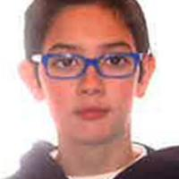

Jorge Juan Palau Galdon
"Jiorgio"
Especialidad: Natación adaptada - espalda y braza
Edad: 23 años
Club: CD Aquatic Campanar
Biografía
Jorge nadador paralímpico español nacido el 23 de enero de 2002, especializado en pruebas de natación adaptada para deportistas con parálisis cerebral. Compite representando al Club Deportivo Aquatic Campanar y forma parte de la Federación Española de Deportes de Personas con Parálisis Cerebral y Daño Cerebral Adquirido (FEDPC)
Logros Deportivos
- Participación en eventos como las Series Mundiales de Natación Paralímpica en Aberdeen
- 8º Europeo 2024 Madeira (Portugal)
- 🥇X3 Juegos Mundiales de la CPISRA, celebrados en Sant Cugat